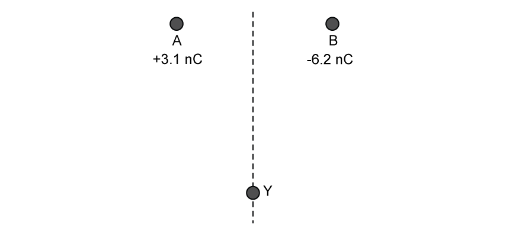
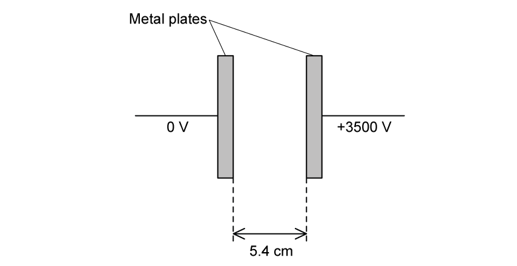
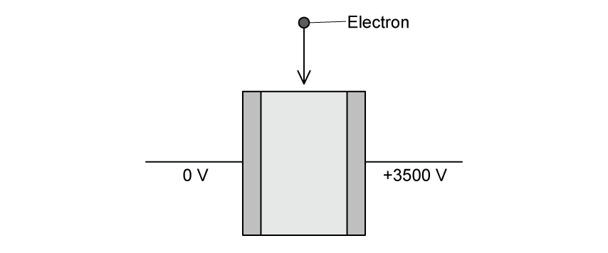
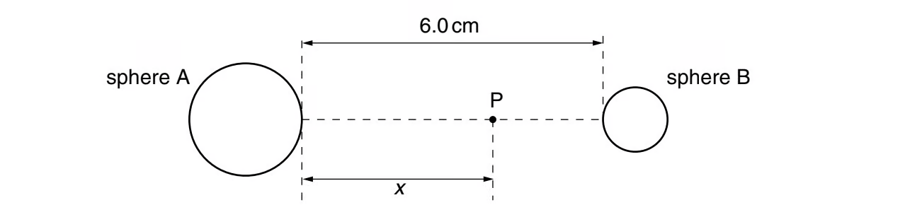
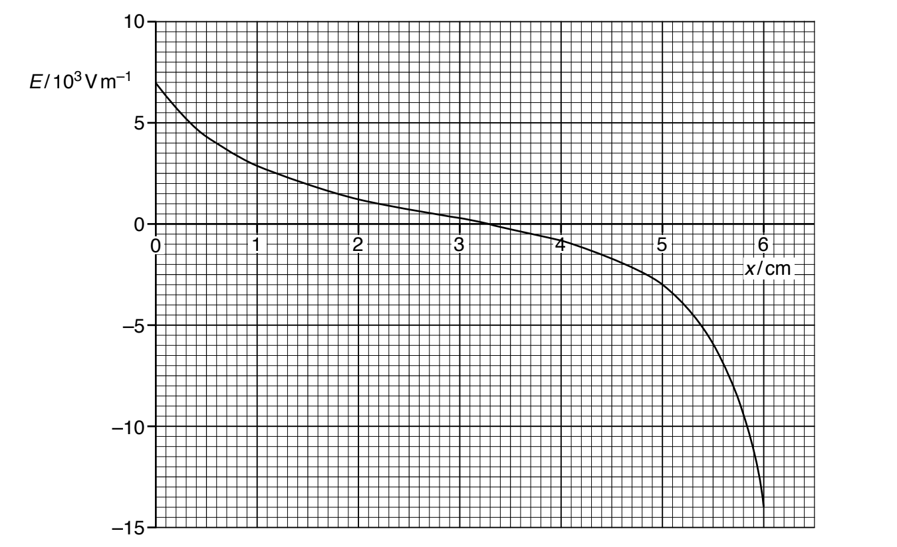
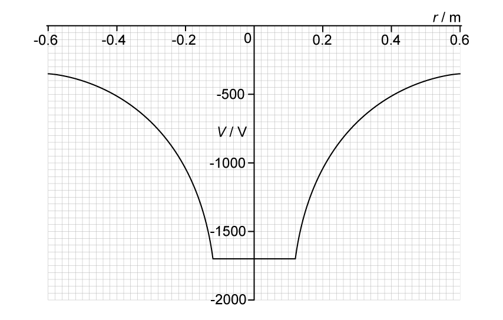
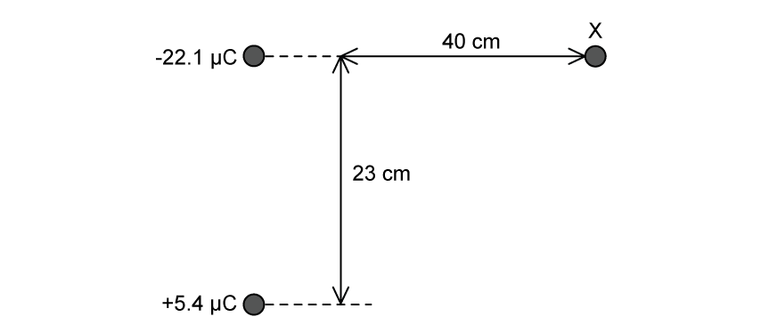
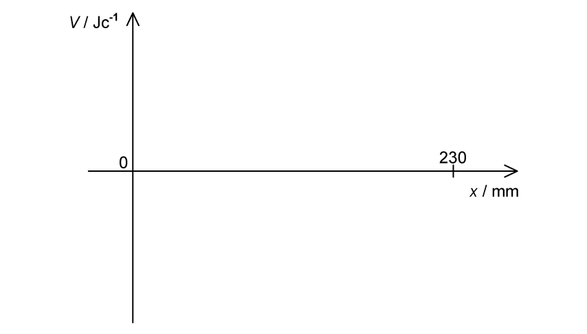

18 Electric fields
Field lines, uniform fields, point charges, electric potential and potential energy
Learning objectives
By the end of this chapter, you should be able to:
- define electric field strength as force per unit positive charge and use \(F=qE\);
- draw and interpret electric field lines;
- use \(E=\Delta V/\Delta d\) for a uniform field between parallel plates;
- describe the motion of charged particles in a uniform electric field;
- apply Coulomb’s law to point charges and charged spheres;
- calculate the electric field strength due to a point charge;
- define and calculate electric potential;
- connect electric field strength with potential gradient;
- calculate the electric potential energy of two point charges.
18.1 Electric fields and field lines
Electric field and electric field strength
An electric field is a region of space in which an electric charge experiences an electrostatic force. Electric field strength at a point is the force per unit positive charge acting on a stationary test charge at that point:
\[E=\frac{F}{q}.\]
Electric field strength is a vector. Its SI unit is \(\mathrm{N\ C^{-1}}\), which is equivalent to \(\mathrm{V\ m^{-1}}\).
The word positive in the definition fixes the field direction. A positive charge experiences a force in the field direction; a negative charge experiences a force in the opposite direction.
Force on a charge
The force on charge \(q\) in an electric field is
\[\vec F=q\vec E.\]
- For \(q>0\), \(\vec F\) is parallel to \(\vec E\).
- For \(q<0\), \(\vec F\) is antiparallel to \(\vec E\).
- The force magnitude is \(|F|=|q|E\).
In a uniform field the force is constant, so a particle of mass \(m\) has constant acceleration
\[\vec a=\frac{q\vec E}{m}.\]
Rules for electric field lines
- Arrows show the direction of force on a positive test charge.
- Lines leave positive charges and enter negative charges.
- Field lines meet a conducting surface at right angles.
- Lines never cross, because the field cannot have two directions at one point.
- Closer line spacing represents a stronger field.
- Equally spaced, parallel lines represent a uniform field.
A positive point charge produces radial outward lines; a negative point charge produces radial inward lines. Between oppositely charged parallel plates, lines are straight, parallel and directed from the positive plate to the negative plate, except near the edges where fringing occurs.
18.2 Uniform electric fields
Field between parallel plates
For a uniform field between parallel plates,
\[E=\frac{|\Delta V|}{\Delta d},\]
where \(\Delta V\) is the potential difference and \(\Delta d\) is the perpendicular plate separation. Use metres for separation.
Increasing the potential difference increases the field strength; increasing the separation reduces it. This equation applies to a uniform field, not directly to the radial field of a point charge.
Motion parallel to the field
A charged particle released from rest in a uniform field undergoes constant acceleration. A positive particle accelerates towards lower potential, in the field direction. A negative particle accelerates towards higher potential, opposite to the field direction.
If the particle moves through a potential difference, energy conservation may be written as
\[\Delta E_{\mathrm{k}}=-\Delta E_{\mathrm{p}}=-q\Delta V.\]
The signs should be interpreted carefully: the electric potential energy of a negative charge decreases when it moves to a higher electric potential.
Motion entering across the field
When a particle enters a uniform field with velocity perpendicular to the field:
- the velocity component perpendicular to the force remains constant;
- the velocity component parallel to the force changes uniformly;
- the path inside the field is parabolic;
- after leaving the field, the particle travels in a straight line tangent to the path at the exit.
Greater \(|q|\) or \(E\) gives more deflection. Greater mass or entry speed gives less deflection. An uncharged particle is not deflected.
18.3 Electric force between point charges
Point-charge approximation
For a point outside a uniformly charged spherical conductor, the sphere’s charge may be treated as a point charge at its centre. Distances in Coulomb’s law must therefore be measured between the centres of the charges or spheres.
This approximation does not describe the field inside the conducting material. In electrostatic equilibrium, the electric field inside a conductor is zero and its potential is constant.
Coulomb’s law
The magnitude of the electrostatic force between two point charges in free space is
\[F=\frac{|Q_1Q_2|}{4\pi\varepsilon_0r^2}=k\frac{|Q_1Q_2|}{r^2},\]
where
\[k=\frac{1}{4\pi\varepsilon_0}\approx8.99\times10^9\ \mathrm{N\ m^2\ C^{-2}}.\]
The force acts along the line joining the charges. Like charges repel and unlike charges attract. The two charges exert forces of equal magnitude and opposite direction on one another.
Inverse-square behaviour and superposition
For fixed charges, \(F\propto1/r^2\). Doubling the separation reduces the force to one quarter.
With more than two charges, calculate the force due to each source separately and add the forces as vectors. Resolve components when the forces are not collinear; do not simply add their magnitudes.
18.4 Electric field of a point charge
Radial electric field
The electric field due to point charge \(Q\) at distance \(r\) in free space is
\[\vec E=\frac{Q}{4\pi\varepsilon_0r^2}\hat r.\]
Its magnitude is
\[E=\frac{|Q|}{4\pi\varepsilon_0r^2}.\]
For \(Q>0\), the field points radially outwards; for \(Q<0\), it points radially inwards. Because \(E\propto1/r^2\), doubling \(r\) reduces \(E\) to one quarter.
Superposition of electric fields
Electric fields add as vectors:
\[\vec E_{\mathrm{resultant}}=\sum_i\vec E_i.\]
At a point between like charges, the individual fields oppose each other. Between unlike charges, they point in the same direction. A zero-field point depends on both charge magnitudes and geometry and need not lie halfway between the charges.
18.5 Electric potential
Definition and sign
Electric potential at a point is the work done per unit positive charge in bringing a small test charge from infinity to that point:
\[V=\frac{W}{q}.\]
Potential is a scalar measured in volts, where \(1\ \mathrm{V}=1\ \mathrm{J\ C^{-1}}\). Taking \(V=0\) at infinity, potential is positive near an isolated positive charge and negative near an isolated negative charge.
Because potential is scalar, contributions from several charges are added algebraically, including their signs.
Potential due to point charges
For a point charge \(Q\),
\[V=\frac{Q}{4\pi\varepsilon_0r}.\]
For several point charges,
\[V=\sum_i\frac{Q_i}{4\pi\varepsilon_0r_i}.\]
Potential varies as \(1/r\), whereas field strength varies as \(1/r^2\). Outside a charged spherical conductor, use the same expression with \(r\) measured from the centre. Inside the conductor, potential is constant and equal to the surface potential.
Potential gradient
Electric field strength is the negative potential gradient:
\[E=-\frac{dV}{dr}\]
along a chosen direction. For a uniform field this becomes
\[E=-\frac{\Delta V}{\Delta d}.\]
Potential decreases in the direction of the electric field. On a \(V\)-\(r\) graph, the magnitude of the gradient at a point gives the field strength there.
Equipotential surfaces
An equipotential surface joins points of equal potential. Moving a charge along an equipotential requires no work because \(\Delta V=0\).
Equipotentials are always perpendicular to electric field lines. They are equally spaced in a uniform field and form concentric spherical surfaces around an isolated point charge.
Electric potential energy
The potential energy of charge \(q\) at potential \(V\) is
\[E_{\mathrm{p}}=qV.\]
For two point charges,
\[E_{\mathrm{p}}=\frac{Qq}{4\pi\varepsilon_0r}.\]
The sign matters. Like charges have positive potential energy; unlike charges have negative potential energy when zero is taken at infinity.
For a movement from \(r_1\) to \(r_2\),
\[\Delta E_{\mathrm{p}}=\frac{Qq}{4\pi\varepsilon_0}\left(\frac{1}{r_2}-\frac{1}{r_1}\right)=q\Delta V.\]
Structured Questions
18.1 Electric Fields - Medium
Example 1 · Coulomb’s law · 18.1 SQ Medium Q1
State Coulomb’s law. [2 marks]
Show mark scheme / model answer
- The electrostatic force between two point charges
[1] - is proportional to the product of the charges and inversely proportional to the square of their separation.
[1]
Equivalently,
\[F=\frac{|Q_1Q_2|}{4\pi\varepsilon_0r^2}.\]Example 2 · Forces between point charges · 18.1 SQ Medium Q2
(a) State what is represented by an electric field line. [2 marks]
(b) Two point charges A and B are placed \(0.014\ \mathrm{mm}\) apart as shown in Fig. 1.1.
The charge of A is \(+3.1\ \mathrm{nC}\) and the charge of B is \(-6.2\ \mathrm{nC}\). The charges have the following radii:
\[r_A=3.2\ \mathrm{pm}\]
\[r_B=4.1\ \mathrm{pm}\]
Determine the magnitude of the force between the two charges. [3 marks]
(c) The magnitude of the electric forces between the charges is very high.
State and explain why this is the case. [2 marks]
(d)
(i) Draw arrows on Fig. 1.1 to show the direction of the electrostatic force coming from charges A and B. [2]
(ii) Particle B is replaced by particle C. Particle C has a charge of \(+6.2\ \mathrm{nC}\).
Describe how the electrostatic force between charges A and C will be different to that between A and B. [2]
(iii) A positron is placed at point Y, equidistant from both A and B, as shown in Fig. 1.2.

On Fig. 1.2 draw an arrow representing the direction of the resultant force acting on the positron. [1]
[5 marks]
Show mark scheme / model answer
(a)
- The line represents the direction of the electric force
[1] - acting on a positive charge.
[1]
(b)
The centre-to-centre separation is
\[r=r_A+r_B+R=(3.2\times10^{-12})+(4.1\times10^{-12})+(0.014\times10^{-3})\approx1.4\times10^{-5}\ \mathrm{m}.\]
[1]Apply Coulomb’s law using charge magnitudes:
\[F=(8.99\times10^9)\frac{(3.1\times10^{-9})(6.2\times10^{-9})}{(1.4\times10^{-5})^2}.\]
[1]\(F=881.6\ \mathrm{N}\approx880\ \mathrm{N}\) to two significant figures.
[1]
(c)
- The charges are very close together, so \(r\) is very small.
[1] - Electrostatic force follows an inverse-square law, \(F\propto1/r^2\).
[1]
(d)
- (i) Draw two equal-length arrows along AB, both labelled \(F\) or force.
[1] - The arrows point towards each other because the opposite charges attract.
[1] - (ii) A and C are both positive, so the force is repulsive.
[1] - The forces are directed away from the other particle rather than towards it.
[1] - (iii) Draw the resultant-force arrow diagonally upwards and to the right of Y, towards the side of B.
[1]
Example 3 · Parallel plates and electron deflection · 18.1 SQ Medium Q3
(a) State what is indicated by the direction of the electric field line. [2 marks]
(b) Fig. 1.1 shows a pair of parallel metal plates with a potential difference (p.d.) of \(3500\ \mathrm{V}\) between them.

The plates are separated by a distance of \(4.6\ \mathrm{cm}\). The plates are in a vacuum.
On Fig. 1.1, draw five lines to represent the electric field in the region between the plates. [3 marks]
(c) Calculate the strength of the electric field between the plates. [2 marks]
(d) A moving electron eneters the region between the plates from the left, as shown in Fig. 1.2.

The electron is deflected by the electric field.
On Fig. 1.2, draw a line to show the path of the electron as it moves through and out of the region of the electric field. [2 marks]
Show mark scheme / model answer
(a)
- The direction of a field line indicates the direction of the electrostatic force
[1] - on a positive charge.
[1]
(b)
- Draw one straight line perpendicular to both plates, starting on one plate and finishing on the other.
[1] - Draw five parallel, uniformly spaced straight lines.
[1] - Add arrows from the \(+3500\ \mathrm{V}\) plate towards the \(0\ \mathrm{V}\) plate.
[1]
(c) Following the supplied PDF answer:
- Use \(E=\Delta V/\Delta d\).
[1] - \(E=3500/0.054=6.48\times10^4\ \mathrm{N\ C^{-1}}\approx6.5\times10^4\ \mathrm{N\ C^{-1}}\).
[1]
Source-consistency warning: the original sentence states a separation of \(4.6\ \mathrm{cm}\), but Fig. 1.1 shows \(5.4\ \mathrm{cm}\) and the supplied answer uses \(5.4\ \mathrm{cm}\). The result above reproduces the PDF answer. Using the sentence value would give \(7.6\times10^4\ \mathrm{N\ C^{-1}}\).
(d)
- The electron path is straight before entering the field, curves smoothly while between the plates, and is straight again after leaving the field.
[1] - The curve deflects towards the positive plate on the right; the outgoing straight path is tangent to the curve at the exit.
[1]
18.2 Electric Potential - Medium
Example 4 · Electric field and potential gradient between spheres · 18.2 SQ Medium Q1
(a) Two charged metal spheres A and B are situated in a vacuum, as illustrated in Fig. 4.1.

The shortest distance between the surfaces of the spheres is \(6.0\ \mathrm{cm}\).
A movable point P lies along the line joining the centres of the two spheres, a distance \(x\) from the surface of sphere A.
The variation with distance \(x\) of the electric field \(E\) at point P is shown in Fig. 4.2.

(i) Use Fig. 4.2 to explain whether the two spheres have charges of the same, or opposite, sign. [2]
(ii) A proton is at point P where \(x=5.0\ \mathrm{cm}\).
Use data from Fig. 4.2 to determine the magnitude of the acceleration of the proton. [3]
[5 marks]
(b) The electric potential gradient is related to the electric field.
Use data from Fig. 4.2 to state the value of \(x\) at which the magnitude of the electric potential gradient is maximum. Give a reason for the value you have chosen. [2 marks]
Show mark scheme / model answer
(a)
- (i) The field close to A is positive while the field close to B is negative, so the fields are in opposite directions. Alternatively, there is a point between the spheres where the resultant field is zero.
[1] - The spheres therefore have charges of the same sign.
[1] - (ii) At \(x=5.0\ \mathrm{cm}\), Fig. 4.2 gives \(E=-3.0\times10^3\ \mathrm{V\ m^{-1}}\), so \(|E|=3.0\times10^3\ \mathrm{V\ m^{-1}}\).
[1] - Combining \(F=Eq\) and \(F=ma\) gives \(a=Eq/m\).
[1] - \(a=(3.0\times10^3)(1.60\times10^{-19})/(1.67\times10^{-27})=2.9\times10^{11}\ \mathrm{m\ s^{-2}}\).
[1]
(b)
- The magnitude of electric field strength is equal to the magnitude of the potential gradient.
[1] - The greatest magnitude of \(E\) on Fig. 4.2 occurs at \(x=6.0\ \mathrm{cm}\), so the magnitude of the potential gradient is maximum there.
[1]
Example 5 · Charged sphere and electric potential energy · 18.2 SQ Medium Q2
(a) Define electric potential at a point. [2 marks]
(b) An isolated conducting sphere is charged. Fig. 1.1 shows the variation of the potential \(V\) due to the sphere with displacement \(r\) from its centre.

Use Fig. 1.1 to determine:
(i) the radius of the sphere; [1]
(ii) the charge on the sphere. [2]
[3 marks]
(c) Two spheres are identical to the sphere in (b) with the same charge.
The spheres are held in a vacuum so that their centres are separated by a distance of \(0.52\ \mathrm{m}\).
Assume that the charge on each sphere is a point charge at the centre of the sphere.
Calculate the electric potential energy \(E_{\mathrm{P}}\) of the two spheres. [2 marks]
(d) The two spheres are now released simultaneously so that they are free to move.
Describe and explain the subsequent motion of the spheres. [3 marks]
Show mark scheme / model answer
(a)
- Electric potential is the work done per unit charge
[1] - in moving a positive charge from infinity to the point.
[1]
(b)
- (i) The flat-potential region extends from \(r=-0.12\ \mathrm{m}\) to \(r=+0.12\ \mathrm{m}\), so the radius is \(0.12\ \mathrm{m}\).
[1] - (ii) The surface potential is approximately \(-1700\ \mathrm{V}\). Using \(V=kQ/r\),
[1] - \(Q=Vr/k=(-1700)(0.12)/(8.99\times10^9)=-2.27\times10^{-8}\ \mathrm{C}\).
[1]
(c)
- \(E_{\mathrm{P}}=kQ^2/r=(8.99\times10^9)(-2.27\times10^{-8})^2/0.52\).
[1] - \(E_{\mathrm{P}}=8.9\times10^{-6}\ \mathrm{J}\).
[1]
(d) Any three:
- The spheres have charges of the same sign, so the force is repulsive and they move apart.
[1] - The force acts in the direction of motion, so their speeds increase.
[1] - Electric potential energy is converted into kinetic energy.
[1] - As separation increases, the force and acceleration decrease.
[1] - Momentum remains zero overall; since the spheres have equal mass, their velocities are equal in magnitude and opposite in direction.
[1]
Example 6 · Potential due to two point charges · 18.2 SQ Medium Q3
(a) Two charges are separated by a distance of \(23\ \mathrm{cm}\), as shown in Fig. 1.1.

Calculate the distance, in mm, from the \(-22.1\ \mathrm{\mu C}\) to the point between the two charges, where the resultant electric potential is zero. [3 marks]
(b) Fig. 1.2 shows the axis of an electric potential against distance graph from the \(-22.1\ \mathrm{\mu C}\) charge to the \(+5.4\ \mathrm{\mu C}\) charge.

Draw the graph on Fig. 1.2 and label any relevant points. [4 marks]
(c) Point X lies \(40\ \mathrm{cm}\) to the right of the \(-22.1\ \mathrm{\mu C}\) charge, as shown in Fig. 1.3.
Calculate the electric potential at point X due to the \(+5.4\ \mathrm{\mu C}\). [3 marks]
(d) Calculate the total electric potential at point X. [3 marks]
Show mark scheme / model answer
(a)
Let \(x\) be the distance from the \(-22.1\ \mathrm{\mu C}\) charge. Since potential is scalar,
\[k\frac{-22.1\times10^{-6}}{x}+k\frac{5.4\times10^{-6}}{0.23-x}=0.\]
[1]Rearranging gives \((-22.1\times10^{-6})(0.23-x)=(-5.4\times10^{-6})x\).
[1]\(x=0.184\ \mathrm{m}=184\ \mathrm{mm}\).
[1]
(b)
- Draw negative potential for \(0<x<184\ \mathrm{mm}\).
[1] - Draw positive potential for \(184<x<230\ \mathrm{mm}\).
[1] - Show vertical asymptotes at \(x=0\) and \(x=230\ \mathrm{mm}\).
[1] - Label the zero-potential crossing at \(x=184\ \mathrm{mm}\).
[1]
(c)
The distance from the \(+5.4\ \mathrm{\mu C}\) charge to X is
\[r=\sqrt{0.40^2+0.23^2}=0.46\ \mathrm{m}.\]
[1]\(V=kQ/r=(8.99\times10^9)(5.4\times10^{-6})/0.46\).
[1]\(V=1.06\times10^5\ \mathrm{J\ C^{-1}}\).
[1]
(d)
Potential at X due to the negative charge is
\[V_1=(8.99\times10^9)\frac{-22.1\times10^{-6}}{0.40}=-4.97\times10^5\ \mathrm{J\ C^{-1}}.\]
[1]Add the potentials algebraically: \(V_{\mathrm{total}}=V_1+V_2\).
[1]\(V_{\mathrm{total}}=-4.97\times10^5+1.06\times10^5=-3.91\times10^5\ \mathrm{J\ C^{-1}}\).
[1]
Chapter self-check
- Can you distinguish field direction from the force direction on a negative charge?
- Can you draw radial and uniform field-line patterns with arrows?
- Can you choose correctly between \(E=\Delta V/\Delta d\) and the point-charge equation?
- Do you measure point-charge separation from centre to centre?
- Can you add electric forces and fields as vectors but potentials as scalars?
- Can you distinguish the \(1/r^2\) variation of field from the \(1/r\) variation of potential?
- Can you use \(E=-dV/dr\) and explain the minus sign?
- Can you retain the signs of charges in potential and potential-energy calculations?